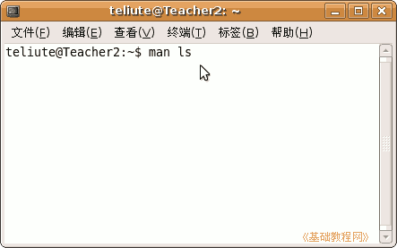

电脑操作基础
作者：TeliuTe 来源：基础教程网
二十、man 帮助命令 返回目录 下一课man 用在终端里，显示软件或命令的帮助，格式是：man 命令，下面我们来看一个练习；
1、终端
1）点菜单“应用程序－附件－终端”，打开一个终端，man 用在终端里；

2）在终端窗口里输入 man ls 然后按一下回车键，这是显示ls命令的帮助；

3）然后显示有关ls命令的作用和各种用法，它是用来显示文件夹内容的；
4）转动鼠标滚轮，或按方向键、PageDown键可以向后翻页，
看完以后，按字母 q 键退出；
2、中文 man1）如果你想使用中文的man帮助，可以在新立得里安装，
点菜单“系统－系统工具－新立得软件包管理器”；
2）在出来的新立得窗口里，点搜索 man ，类型为 名称，然后点搜索按钮；
3）在出来的窗口中，找到 manpages-zh ，瞄准点右键选“标记以便安装”；
4）点工具栏上的应用，等安装完成后，再使用man命令，显示的就是中文帮助了；
本节学习了在Ubuntu中的基本操作，如果你成功地完成了练习，请继续学习下一课内容；
本教程由86团学校TeliuTe制作|著作权所有，商业用途请与作者联系
基础教程网：http://www.laxjyj.com/teliute/
美丽的校园……
转载和引用本站内容，请保留版权信息和本站链接。